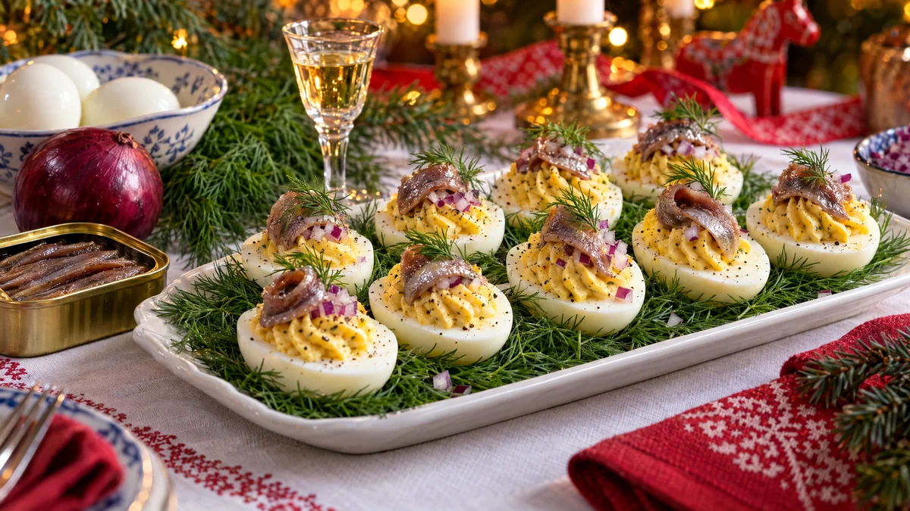

RESTFEST · RECEPTFörrätt · Mingelmat & tilltugg
Ägghalvor med gubbröra, rödlök och dill
Sex ägg, en burk ansjovis och en rödlök. Äggulorna mosas med gräddfil, finhackad ansjovis, dill och rödlök till en gyllene, salt röra som spritsas tillbaka i vitorna. Toppa med en ansjovisremsa och en dillkvist. Den klassiska gubbröran klädd för mingel, och en självklar bit på julbordet.
- Förberedelse
- 20 min
- Tillagning
- 10 min
- Portioner
- 12 ägghalvor
- Nivå
- Nybörjare
 Det här behöver du
Det här behöver du
Tryck på + vid det du behöver köpa.
Ägg
Gubbröra
Till servering
Gör så här
- Lägg äggen i en kastrull med kokande vatten och koka i 9 minuter. Kyl dem direkt i kallt vatten, så blir gulan klargul utan grå kant och skalet lossnar lättare.
- Skala äggen och dela dem på längden. Skär en tunn skiva från undersidan av vitorna, så att de står stadigt. Lyft ut gulorna.
- Finhacka rödlöken. Spara 1 msk till garnering.
- Hacka ansjovisen fint. Mosa gulorna med en gaffel och rör ner ansjovis, spad, gräddfil, majonnäs, rödlök, dill och gräslök till en slät röra. Smaka av med peppar. Salt behövs inte.
- Fyll röran i en spritspåse med stjärntyll, eller i en fryspåse med ett avklippt hörn, och spritsa en hög rosett i varje vita.
- Kyl ägghalvorna i 15 minuter före servering.
Dekoration och servering
- Toppa varje ägghalva med en tunn ansjovisremsa i en liten båge, lite av den sparade rödlöken och en dillkvist.
- Lägg ägghalvorna i rader på ett fat med en bädd av dill under, så att de står stadigt.
- Avsluta med nymald svartpeppar.
- Servera inom ett par timmar och förvara dem kallt till dess.
- Svensk ansjovis är kryddinlagd skarpsill, inte italiensk sardell. Det är den du vill ha här.
Mått och ugnstemperaturer
Måtten är svenska (dl, msk, tsk, krm). Ugnstemperaturerna gäller vanlig ugn med över- och undervärme; med varmluft, sänk med 20 grader.